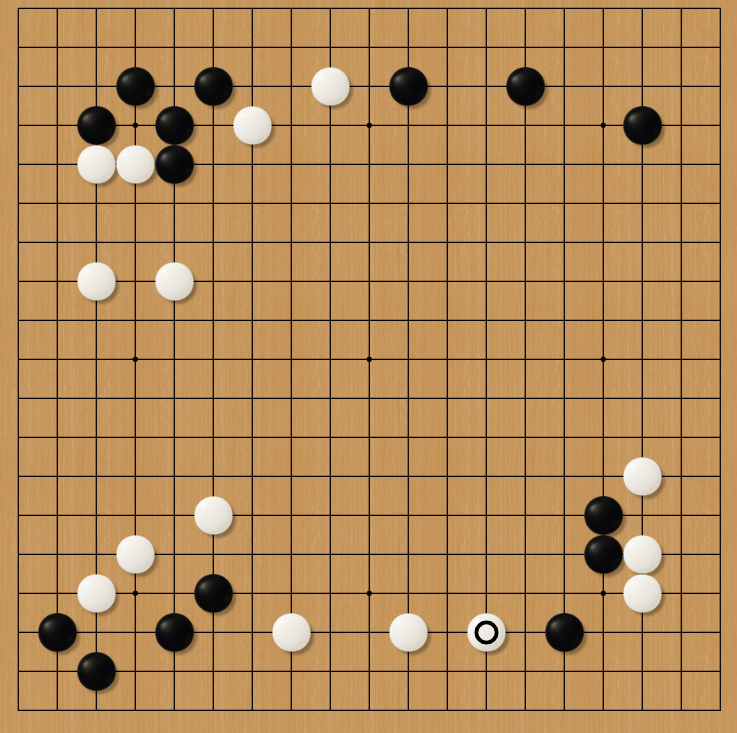

Welcome to "How to Play Go"! Go is an abstract board game invented over 2500 years ago. In essence, the game revolves around controlling as much of the board as possible through the use of a variety of strategies. While it is obviously a strategy game at heart, Go has been interpreted as a metaphor for various events in history. This website will guide you through the basics of Go.
An example game of Go during the early game.